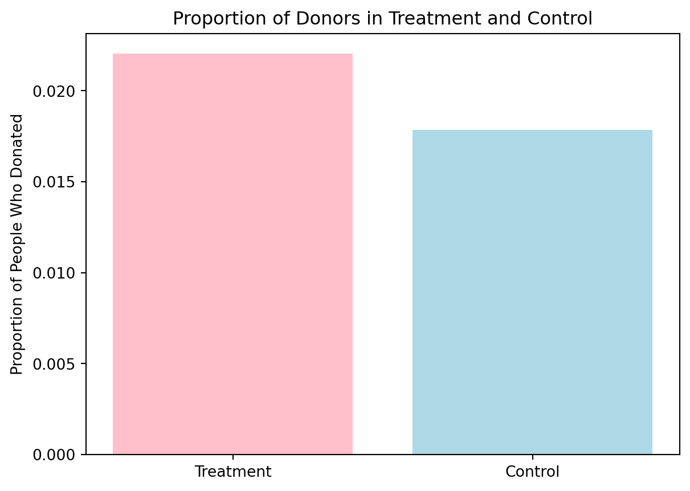
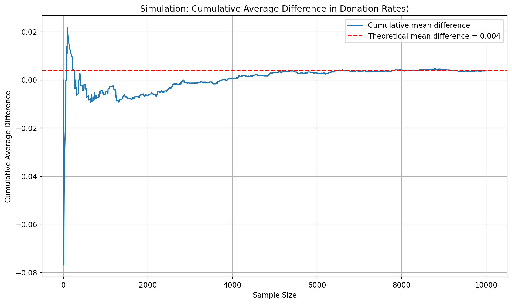

Dean Karlan at Yale and John List at the University of Chicago conducted a field experiment to test the effectiveness of different fundraising letters. They sent out 50,000 fundraising letters to potential donors, randomly assigning each letter to one of three treatments: a standard letter, a matching grant letter, or a challenge grant letter. They published the results of this experiment in the American Economic Review in 2007. The article and supporting data are available from the AEA website and from Innovations for Poverty Action as part of Harvard’s Dataverse.
In oreder to explore if the price affects on chartibal giving behavior, Dean Karlan and John conducted a large scale experiment involving about 50,000 donors to a liberal nonprofit organization. The subjects were randomly assigned to two groups: a control group and an experimental group. The control group received a standard fundraising letter without any additional instructions, while the experimental group received a letter containing a matching grant.
In this experiment, people are further randomly assigned to different sub-treatment conditions, such as designs of matching ratio, matching amount cap and suggested donation amount. These details will be further described in the data description section. The group of treatment will receive letters included an additional paragraph inserted at the top of the second page that announced that a “concerned fellow member” will match their donation, and the reply card included in bold type the details of the match. For the control group, the reply card match language was replaced with a large logo of the organization.
This design allows researchers to not only estimate the average treatment effect, but also to further analyze the impact of different matching ratios, upper limits, and recommended amounts on donation decisions. In addition, the study also observed differential responses in red states and blue states, indicating that the political environment also affects the sensitivity of donation behavior.
This project seeks to replicate their results.
Data
Description
This data comes from a large-scale natural field experiment conducted by a liberal nonprofit organization in the United States in 2005. The purpose of the study was to explore:
Do different donation reminder designs affect people’s actual donation behavior?
Treatment Conditions
Paired ratios: $1:$1, $2:$1, $3:$1, control
Maximum amount of matching: $25,000 / $50,000 / $100,000 / control
Ask amount: based on 1.0 times, 1.25 times, or 1.5 times the donor’s highest past donation<
Sample size and groups
Total sample size: 50,083 donors
Control group: 16,687 people (33%)
Treatment group: 33,396 people (67%)
The fundraising letter received contains instructions for matching donations and is randomly assigned to different matching ratio/maximum amount/suggested amount combinations
Loading dataset
import pandas as pddata = pd.read_stata('/home/jovyan/Desktop/UCSD/Spring/MGTA495/lulu_marketing_analytics/blog/Project1/karlan_list_2007.dta')data.head()
treatment
control
ratio
ratio2
ratio3
size
size25
size50
size100
sizeno
...
redcty
bluecty
pwhite
pblack
page18_39
ave_hh_sz
median_hhincome
powner
psch_atlstba
pop_propurban
0
0
1
Control
0
0
Control
0
0
0
0
...
0.0
1.0
0.446493
0.527769
0.317591
2.10
28517.0
0.499807
0.324528
1.0
1
0
1
Control
0
0
Control
0
0
0
0
...
1.0
0.0
NaN
NaN
NaN
NaN
NaN
NaN
NaN
NaN
2
1
0
1
0
0
$100,000
0
0
1
0
...
0.0
1.0
0.935706
0.011948
0.276128
2.48
51175.0
0.721941
0.192668
1.0
3
1
0
1
0
0
Unstated
0
0
0
1
...
1.0
0.0
0.888331
0.010760
0.279412
2.65
79269.0
0.920431
0.412142
1.0
4
1
0
1
0
0
$50,000
0
1
0
0
...
0.0
1.0
0.759014
0.127421
0.442389
1.85
40908.0
0.416072
0.439965
1.0
5 rows × 51 columns
Variable Definitions
Variable
Description
treatment
Treatment
control
Control
ratio
Match ratio
ratio2
2:1 match ratio
ratio3
3:1 match ratio
size
Match threshold
size25
$25,000 match threshold
size50
$50,000 match threshold
size100
$100,000 match threshold
sizeno
Unstated match threshold
ask
Suggested donation amount
askd1
Suggested donation was highest previous contribution
askd2
Suggested donation was 1.25 x highest previous contribution
askd3
Suggested donation was 1.50 x highest previous contribution
ask1
Highest previous contribution (for suggestion)
ask2
1.25 x highest previous contribution (for suggestion)
ask3
1.50 x highest previous contribution (for suggestion)
amount
Dollars given
gave
Gave anything
amountchange
Change in amount given
hpa
Highest previous contribution
ltmedmra
Small prior donor: last gift was less than median $35
freq
Number of prior donations
years
Number of years since initial donation
year5
At least 5 years since initial donation
mrm2
Number of months since last donation
dormant
Already donated in 2005
female
Female
couple
Couple
state50one
State tag: 1 for one observation of each of 50 states; 0 otherwise
nonlit
Nonlitigation
cases
Court cases from state in 2004-5 in which organization was involved
statecnt
Percent of sample from state
stateresponse
Proportion of sample from the state who gave
stateresponset
Proportion of treated sample from the state who gave
stateresponsec
Proportion of control sample from the state who gave
stateresponsetminc
stateresponset - stateresponsec
perbush
State vote share for Bush
close25
State vote share for Bush between 47.5% and 52.5%
red0
Red state
blue0
Blue state
redcty
Red county
bluecty
Blue county
pwhite
Proportion white within zip code
pblack
Proportion black within zip code
page18_39
Proportion age 18-39 within zip code
ave_hh_sz
Average household size within zip code
median_hhincome
Median household income within zip code
powner
Proportion house owner within zip code
psch_atlstba
Proportion who finished college within zip code
pop_propurban
Proportion of population urban within zip code
Balance Test
As an ad hoc test of the randomization mechanism, I provide a series of tests that compare aspects of the treatment and control groups to assess whether they are statistically significantly different from one another.
treatment_mrm2 = [x for x in treatment_data['mrm2'] if x == x]control_mrm2 = [x for x in control_data['mrm2'] if x == x]n1 =len(treatment_mrm2)n2 =len(control_mrm2)mean1 =sum(treatment_mrm2) / n1mean2 =sum(control_mrm2) / n2var1 =sum((x - mean1)**2for x in treatment_mrm2) / (n1 -1)var2 =sum((x - mean2)**2for x in control_mrm2) / (n2 -1)se = ((var1 / n1) + (var2 / n2)) **0.5t_stat = (mean1 - mean2) / seprint(f"t-statistic = {round(t_stat, 4)}")
Table 1 is used to assess whether the experimental random assignment was successful. It compares the treatment and control groups on background variables such as past donation behavior, demographics, and political region. Since these factors should not be influenced by the treatment, the goal is to show that both groups were similar before the experiment, ensuring that later differences in donation behavior can be attributed to the treatment itself rather than pre-existing differences.
The results of t-test and linear regression analysis are consistent with Table 1 in the paper. Table 1 is designed to show that before the experiment, the distributions of the treatment and control groups on a series of background variables are very similar. This is critical because if the two groups differ on these variables, then the experimental results cannot be attributed simply to the effect of the treatment, but may be caused by differences in the sample composition. But now we see that there is no significant difference in the variable mrm2 between the two groups, which provides evidence that the randomization of the experiment was successful. Therefore, we can reasonably infer that the subsequent differences in donation behavior are more likely caused by the paired donation prompt (treatment) rather than the differences in the original background conditions between the two groups.
Experimental Results
Charitable Contribution Made
First, I analyze whether matched donations lead to an increased response rate of making a donation.
Bar plot of the proportion of peole donated between treatment and controal group.
import matplotlib.pyplot as plttreatment_prop = treatment_data['gave'].mean()control_prop = control_data['gave'].mean()plt.bar(['Treatment', 'Control'], [treatment_prop, control_prop], color=['pink', 'lightblue'])plt.ylabel('Proportion of People Who Donated')plt.title('Proportion of Donors in Treatment and Control')plt.show()

T test: compare whether there is a significant difference in the donation rate between the treatment and control groups
We first conducted an independent sample t-test on the binary variable gave. The results showed that the t-value and the p-value indicating that the difference in donation rates between the treatment group and the control group was statistically significant at a 95% confidence level. This suggests that simply including the phrase “your donation will be matched” in your fundraising email can significantly increase donation rates.
Linear regression: Using OLS to test the effect of treatment on donation behavior
To verify this, we used simple linear regression with gave as the dependent variable and treatment as the independent variable. The results showed that the t-value and p-value were almost consistent with the t-test results, proving that the two methods are consistent when analyzing this type of binary outcome variable.
The proportion of respsonse rate in control gorup and treatment group
Control Proportion: 0.018
Treatment Proportion: 0.022
This result is also consistent with the data in Table 2A of the original text (1.8% in the control group and 2.2% in the experimental group). From a behavioral economics perspective, this stable difference may be because when people see the message that “your donation will be matched,” they feel that their donation is more valuable and more influential. This feeling will make them more willing to donate. It’s like people feel a sense of satisfaction when they donate, and the message of matching donations makes this satisfaction even stronger, thus increasing their willingness to act.
Overall, this analysis supports the original authors’ conclusion: even without changing the amount, providing matching information can effectively increase the likelihood of donations, which has important implications for practical fundraising strategies.
todo: run a probit regression where the outcome variable is whether any charitable donation was made and the explanatory variable is assignment to treatment or control. Confirm that your results replicate Table 3 column 1 in the paper.
Probit Regression: Estimating the Effect of Pairing Prompts on the Probability of Donating
The results are completely consistent with column 1 of Table 3 , successfully replicating the reported analysis. This means that the pairing prompt can significantly increase the probability of people donating, and even if the effect is small, it is statistically stable and significant. In the Probit model, the original coefficient cannot be directly interpreted as “how much the donation rate increased”, but it can be converted into a marginal effect. We can see from the Probit marginal effect model that the result is 0.0043, which corresponds exactly to 0.004 in the first column of Table 3.
Differences between Match Rates
Next, I assess the effectiveness of different sizes of matched donations on the response rate.
T-test 1:1 vs 2:1 - t-statistic: -0.9650, p-value: 0.3345
T-test 2:1 vs 3:1 - t-statistic: -0.0501, p-value: 0.9600
In the paired donation prompt group, there were no significant behavioral differences between the different pairing ratios (1:1, 2:1, and 3:1).The t-value of the 1:1 and 2:1 groups is -0.965, and the p-value is 0.3345, indicating that we cannot reject the null hypothesis and there is no statistically significant difference in the donation rates between the two groups. The difference between the 2:1 and 3:1 groups is even smaller, with a t-value of only -0.0501 and a corresponding p-value of 0.96, indicating that there is no difference in donation behavior between the two groups.
The analysis results of the t-test support the author’s observations on page 8 of the paper. The authors note that while the pairing prompt itself increased donation rates, further increasing the pairing ratio (from 1:1 to 2:1 or 3:1) in the pairing prompt group did not lead to additional effects. The t-test you conducted also clearly reflects this point: the difference in donation rates between different matching ratios is not statistically significant, and the p-values are all far higher than the traditional significance level, especially the difference between 2:1 and 3:1 is almost zero. This shows that in actual donation behavior, people are more sensitive to whether there is a match rather than the size of the matching ratio.
According to the regression results, we observed that different pairing ratios do have an impact on donation behavior, but the strength of the effect varies. The donation rate for ratio1 is about 0.29 percentage points higher, which is positive but only slightly statistically significant. The effects of the paired groups of ratio2 and ratio3 are more obvious, with the donation rates being approximately 0.48 and 0.49 percentage points higher than the benchmark group, respectively, and are significant at the 1% significance level.
This means that as long as there is matching information, even ratio 1 may increase people’s willingness to donate, and increasing the matching ratio to ratio 2 or ratio 3 will further strengthen this incentive. However, the effects of ratio2 and ratio3 are similar and almost the same, indicating that the marginal benefit of increasing the pairing ratio tends to be flat or saturated. This is consistent with the authors’ observation in the paper that higher pairing ratios do not necessarily produce additional significant behavioral changes.
todo: Calculate the response rate difference between the 1:1 and 2:1 match ratios and the 2:1 and 3:1 ratios. Do this directly from the data, and do it by computing the differences in the fitted coefficients of the previous regression. what do you conclude regarding the effectiveness of different sizes of matched donations?
Response rate difference 1:1 vs 2:1: 0.0019
Response rate difference 2:1 vs 3:1: 0.0001
The difference between the donation rates is very small, and further increasing the matching ratio, for example from ratio1 to ratio2 or ratio3, has very limited effect on the donation rate.
Size of Charitable Contribution
In this subsection, I analyze the effect of the size of matched donation on the size of the charitable contribution.
When we analyzed the donation amount, both the independent sample t-test and the bivariate linear regression showed that the average donation amount of the treatment group was slightly higher than that of the control group, but the difference was only marginally significant. The p-value of the t-test is 0.0551, and the p-value of the regression is 0.063, both slightly higher than the traditional 5% significance level.
Overall, the matching prompt has a clear impact on whether to donate, while the impact of amount is weaker. From a behavioral perspective, the matching message is more like a “motivation switch” that prompts people to take action rather than a reinforcement tool that influences the amount of donations. This also means that in terms of fundraising strategy, matching donations are more suitable as an incentive to guide donation behavior rather than a means to increase the single amount.
todo: now limit the data to just people who made a donation and repeat the previous analysis. This regression allows you to analyze how much respondents donate conditional on donating some positive amount. Interpret the regression coefficients – what did we learn? Does the treatment coefficient have a causal interpretation?
Conditional donation amount regression analysis: evaluating the impact and explanatory power of matching prompts only for actual donors
In this regression analysis of those who have already donated, the treatment coefficient is -1.6684, it means that the average donation amount of the treatment group is about 1.67 yuan lower than that of the control group., however, this result is not statistically significant because the p-value is only 0.561, indicating that the matching prompt has no stable effect on the amount donated by those who have already decided to donate. It should be noted that this regression result cannot be interpreted as a causal effect of treatment on the amount of donations, because the analysis is limited to people who actually donated. This is a conditional subsample and not a random assignment, so there is a risk of selection bias. Taken together, our findings suggest that matching donation prompts are more likely to influence the behavior of whether to donate rather than the amount of donation.
todo: Make two plot: one for the treatment group and one for the control. Each plot should be a histogram of the donation amounts only among people who donated. Add a red vertical bar or some other annotation to indicate the sample average for each plot.
Compare the distribution of donations between treatment and control groups (limited to donors)
As a reminder of how the t-statistic “works,” in this section I use simulation to demonstrate the Law of Large Numbers and the Central Limit Theorem.
Suppose the true distribution of respondents who do not get a charitable donation match is Bernoulli with probability p=0.018 that a donation is made.
Further suppose that the true distribution of respondents who do get a charitable donation match of any size is Bernoulli with probability p=0.022 that a donation is made.
Law of Large Numbers
Simulation of the Law of Large Numbers: Cumulative Average Difference in Donation Rates
import numpy as np#calculationnp.random.seed(42)control_draws = np.random.binomial(n=1, p=0.018, size=100000)treatment_draws = np.random.binomial(n=1, p=0.022, size=10000)control_sample = np.random.choice(control_draws, size=10000, replace=False)diff = treatment_draws - control_samplecumulative_avg = np.cumsum(diff) / np.arange(1, len(diff) +1)#plotplt.figure(figsize=(10, 6))plt.plot(cumulative_avg, label="Cumulative mean difference")plt.axhline(y=0.004, color='red', linestyle='--', label="Theoretical mean difference = 0.004")plt.title("Simulation: Cumulative Average Difference in Donation Rates)")plt.xlabel("Sample Size")plt.ylabel("Cumulative Average Difference")plt.legend()plt.grid(True)plt.tight_layout()plt.show()

This graph shows the difference in donation rates between the treatment group and the control group, calculated through simulations, as the number of samples increases. As can be seen from the figure, although the difference fluctuates greatly when the number of samples is small, as the number of samples gradually increases, the cumulative average curve steadily approaches the theoretical true difference value of 0.004.
This is a typical manifestation of the Law of Large Numbers: when we observe enough samples, the mean of the samples will approach the true mean of the population. This also means that the difference in donation rates observed in the original experiment (the slightly higher donation rate in the treatment group than in the control group) was not caused by random errors, but was a stable and reproducible result.
Therefore, we can reasonably say that the simulation results in this figure verify the stability and credibility of the treatment effect and provide strong visual evidence to support that the observations in the experiment are reliable.
Central Limit Theorem
to do: Make 4 histograms like those on slide 44 from our first class at sample sizes 50, 200, 500, and 1000 and explain these plots to the reader. To do this for a sample size of e.g. 50, take 50 draws from each of the control and treatment distributions, and calculate the average difference between those draws. Then repeat that process 999 more times so that you have 1000 averages. Plot the histogram of those averages. Comment on whether zero is in the “middle” of the distribution or whether it’s in the “tail.”
These four histograms show the simulated distribution changes of the difference in donation rates between the treatment group and the control group under different sample sizes (50, 200, 500, 1000). When the sample size is small, the distribution is more dispersed, and 0 almost falls in the center, which means that it is impossible to determine whether the treatment effect is significant. However, as the number of samples increases, the distribution begins to become concentrated and biased toward positive differences, especially when the number of samples reaches 500 or 1000, when 0 is clearly off the center and falls in the left tail of the distribution. This means that when the sample size is sufficient, the treatment group does show a stable and positive effect, and the average donation rate is higher than that of the control group. This difference is unlikely to be caused by random errors. Overall, this set of charts reinforces a basic principle in statistical inference: the larger the sample size, the more stable the results and the more reliably they reveal true behavioral differences.